TECH RWT Discovery: Science और Technology आसान हिंदी में
TECH RWT Discovery पर विज्ञान और तकनीक की खबरें और गहरी पड़तालें आसान हिंदी में मिलती हैं। हर लेख के अंत में स्रोत दिए जाते हैं और कठिन शब्द सरल भाषा में समझाए जाते हैं। ताज़ा लेख नीचे देखिए, या सीधे किसी विषय पर जाइए: Science, Space & ISRO, Technology & Future Tech, Environment और Innovation। पूरी सूची के लिए सभी लेख देखिए।

नवीनतम प्रकाशन (Latest Articles)
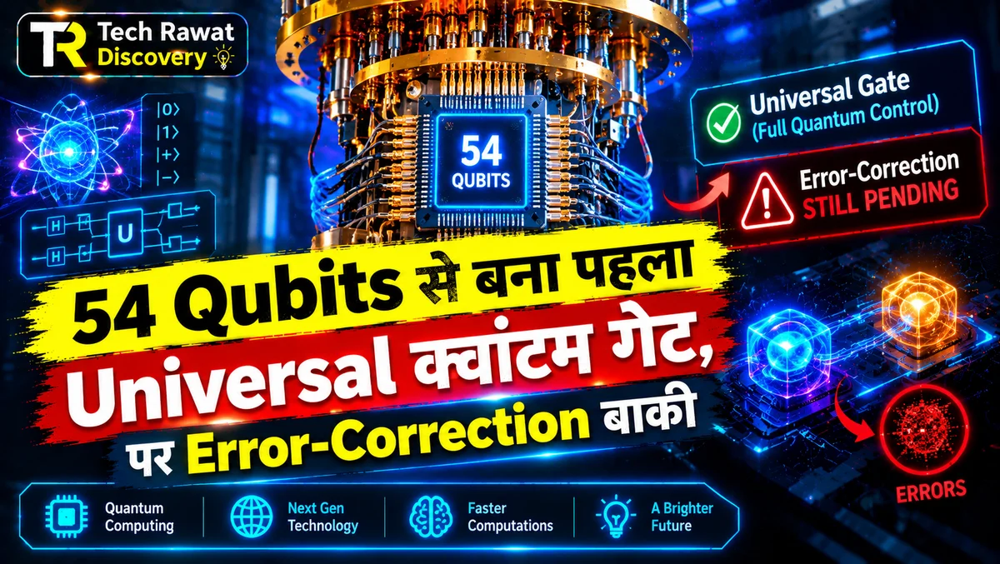
54 Qubits से बना पहला Universal क्वांटम गेट, पर Error-Correction बाकी
Quantinuum के H2 प्रोसेसर पर 54 qubits से non-Abelian anyons बनाकर वैज्ञानिकों ने पहली बार पूरा यूनिवर्सल क्वांटम गेट सेट दिखाया। जानिए खोज क्यों अहम है और भारत के Quantum Mission को क्या मिलेगा।
पूरा लेख पढ़ें →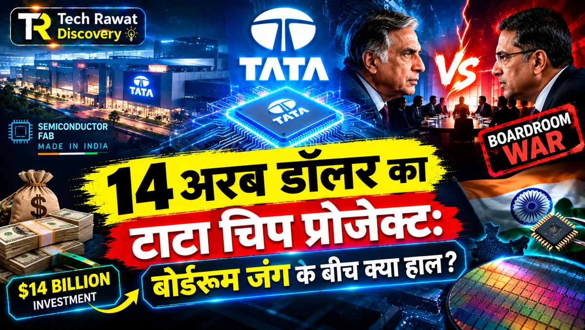
14 अरब डॉलर का टाटा चिप प्रोजेक्ट: बोर्डरूम जंग के बीच क्या हाल?
Tata Sons में चेयरमैन को लेकर बोर्डरूम विवाद के बीच, सरकार ने टाटा से 14 अरब डॉलर के Dholera चिप फैब पर पुष्टि ली है। जानिए प्रोजेक्ट की असली स्थिति और भारत के लिए मायने।
पूरा लेख पढ़ें →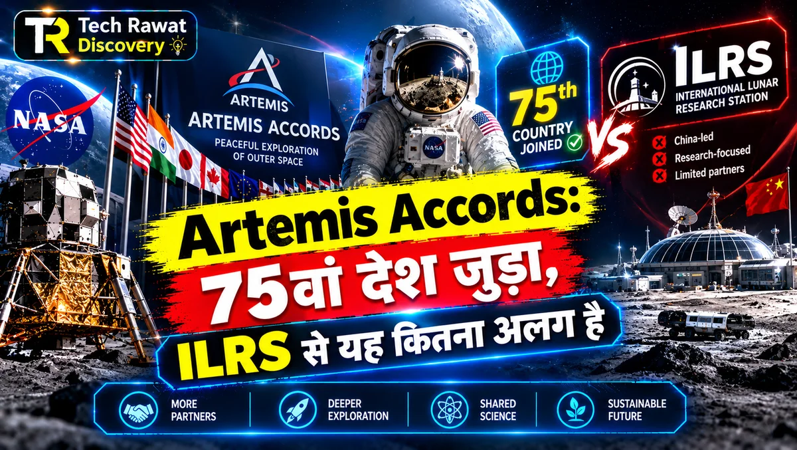
Artemis Accords: 75वां देश जुड़ा, ILRS से यह कितना अलग है
24 सितंबर 2026 को कोत दिव्वार Artemis Accords का 75वां सदस्य बना। जानिए यह चीन-रूस के ILRS प्रोग्राम से कितना अलग है, और भारत व पाकिस्तान ने किस गुट को चुना।
पूरा लेख पढ़ें →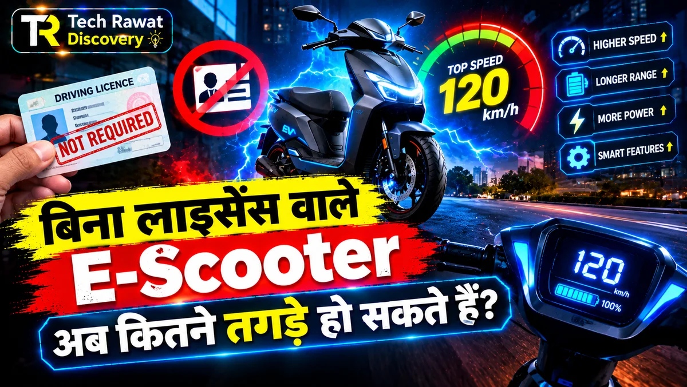
बिना लाइसेंस वाले E-Scooter अब कितने तगड़े हो सकते हैं?
MoRTH ने बिना लाइसेंस-रजिस्ट्रेशन वाले low-speed EV की मोटर पावर सीमा 250W से 600W करने और वजन सीमा हटाने का मसौदा जारी किया है। जानिए यह बदलाव कैसे काम करेगा और Yulu-BGauss में असहमति क्यों है।
पूरा लेख पढ़ें →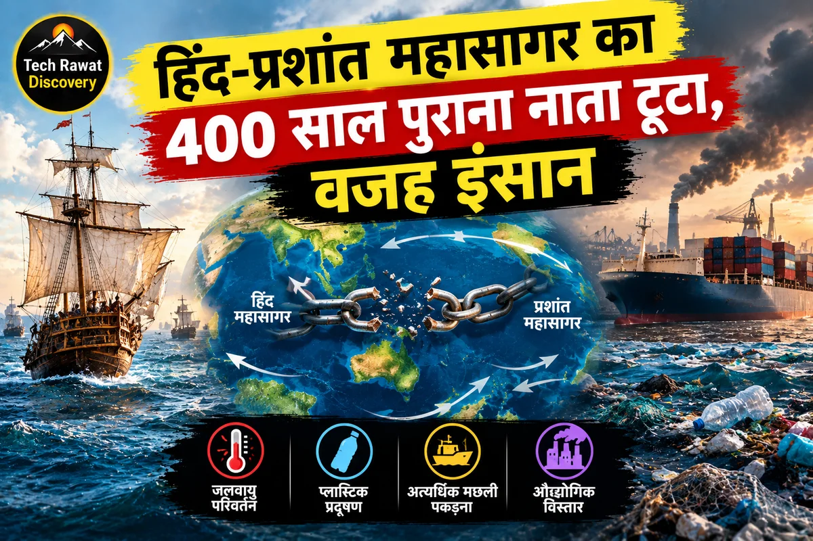
हिंद-प्रशांत महासागर का 400 साल पुराना नाता टूटा, वजह इंसान
WHOI की नई स्टडी के मुताबिक हिंद और प्रशांत महासागर 400 साल तक जुड़े रहने के बाद अब अलग व्यवहार कर रहे हैं, इस बार वजह ज्वालामुखी नहीं इंसानी उत्सर्जन है। भारत के मानसून के लिए इसका मतलब जानें।
पूरा लेख पढ़ें →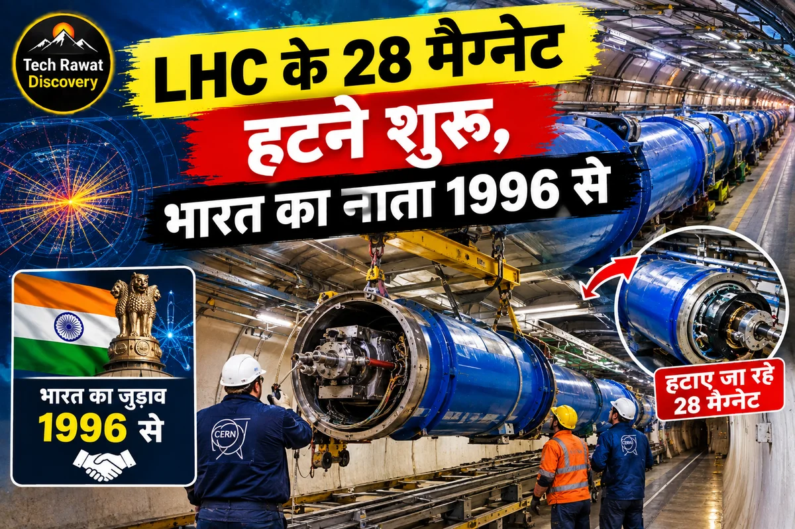
LHC के 28 मैग्नेट हटने शुरू, भारत का नाता 1996 से
CERN ने अपने LHC के 28 सबसे अहम मैग्नेट हटाना शुरू कर दिया है। जानिए HiLumi LHC अपग्रेड में क्या बदलेगा, और 1996 से चला आ रहा भारत का इस मशीन से नाता आज कहां खड़ा है।
पूरा लेख पढ़ें →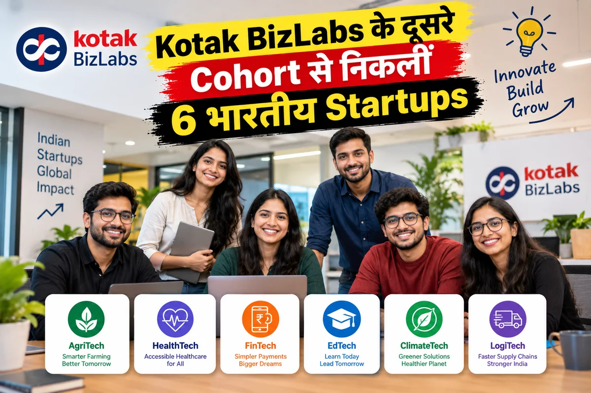
Kotak BizLabs के दूसरे Cohort से निकलीं 6 भारतीय Startups
Kotak BizLabs और FITT-IIT Delhi के accelerator से निकलीं 6 भारतीय स्टार्टअप्स की कहानियां, रेलवे सुरक्षा से लेकर रक्षा तकनीक और बिना पानी की रंगाई तक।
पूरा लेख पढ़ें →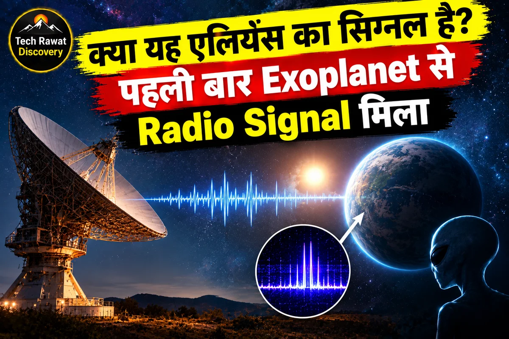
क्या यह एलियंस का सिग्नल है? पहली बार Exoplanet से Radio Signal मिला
MeerKAT टेलीस्कोप ने पहली बार सीधे किसी एक्सोप्लैनेट Beta Pictoris b से रेडियो सिग्नल पकड़े हैं। यह एलियन का संदेश नहीं, बल्कि ऑरोरा जैसी प्राकृतिक घटना है। जानिए पूरी खोज।
पूरा लेख पढ़ें →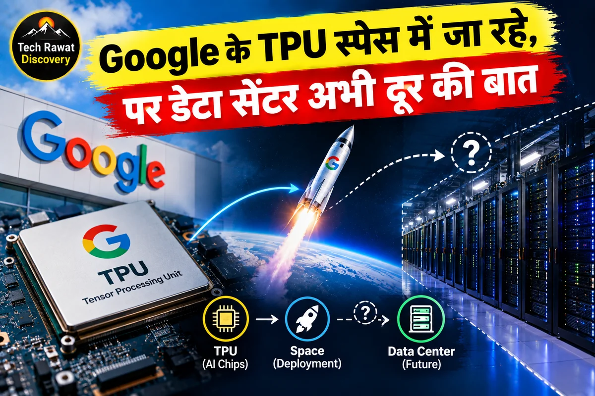
Google के TPU स्पेस में जा रहे, पर डेटा सेंटर अभी दूर की बात
Google 1 अक्टूबर 2026 को सिर्फ 4 TPU वाला टेस्ट सैटेलाइट भेज रहा है, पूरा ऑर्बिटल डेटा सेंटर अभी सिर्फ योजना है। जानिए Project Suncatcher की असली स्थिति और भारत के Pathfinder मिशन से तुलना।
पूरा लेख पढ़ें →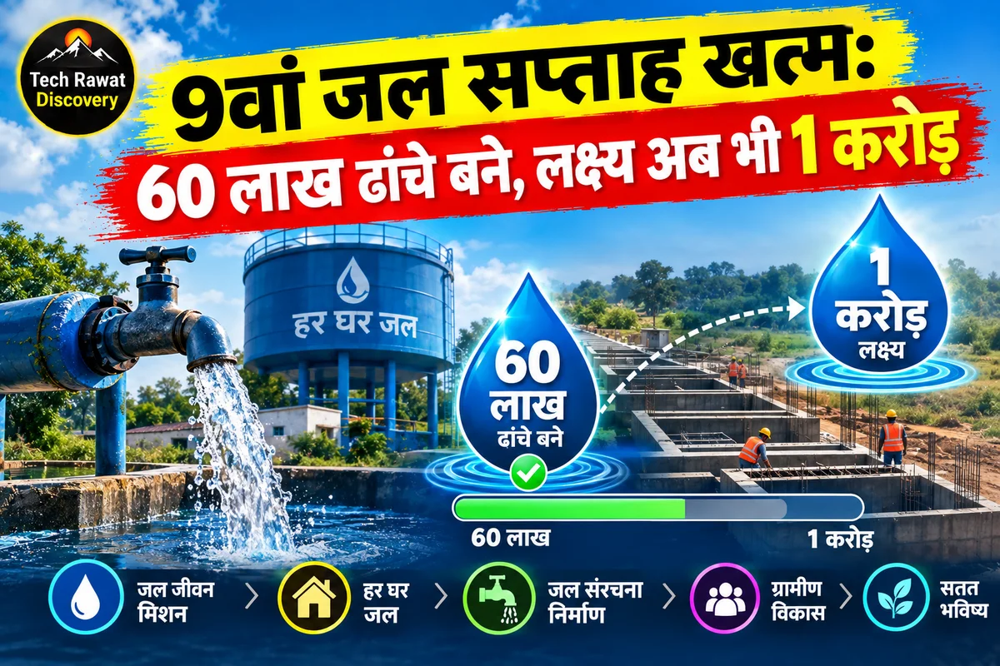
9वां जल सप्ताह खत्म: 60 लाख ढांचे बने, लक्ष्य अब भी 1 करोड़
भारत का 9वां India International Water Week 25 सितंबर 2026 को दिल्ली में खत्म हुआ। जल संचय जन भागीदारी अभियान में 60 लाख संरचनाएं बनीं, पर लक्ष्य 1 करोड़ का है। पूरा हिसाब पढ़ें।
पूरा लेख पढ़ें →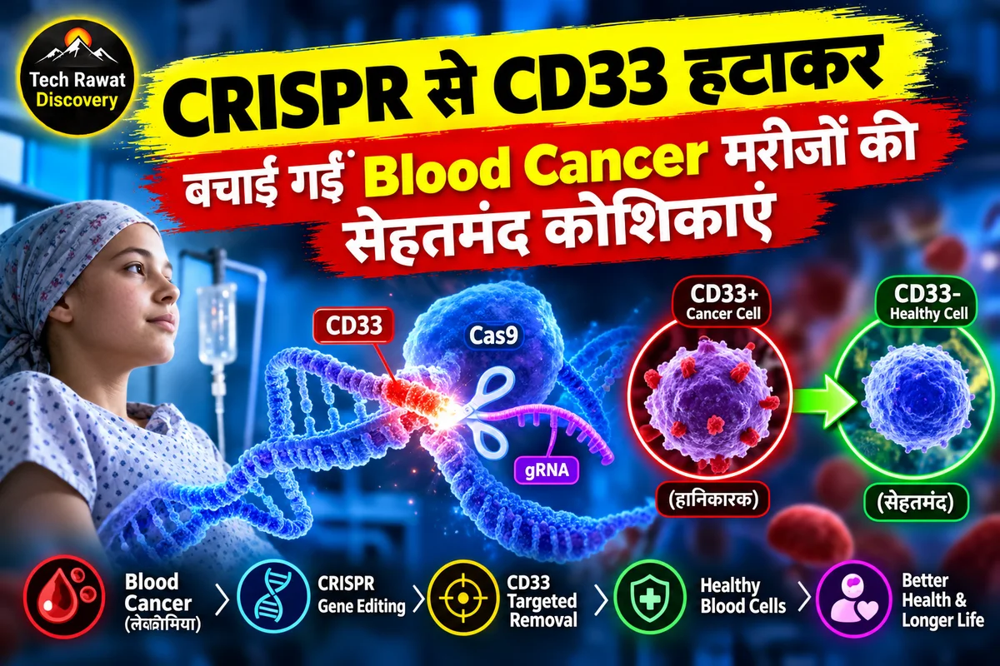
CRISPR से CD33 हटाकर बचाई गईं Blood Cancer मरीजों की सेहतमंद कोशिकाएं
WashU Medicine के 30-मरीज ट्रायल में डोनर स्टेम सेल से CRISPR से CD33 हटाकर Blood Cancer थेरेपी को सेहतमंद कोशिकाओं के लिए सुरक्षित बनाने की कोशिश हुई। जानिए तरीका, नतीजे और भारत के लिए मतलब।
पूरा लेख पढ़ें →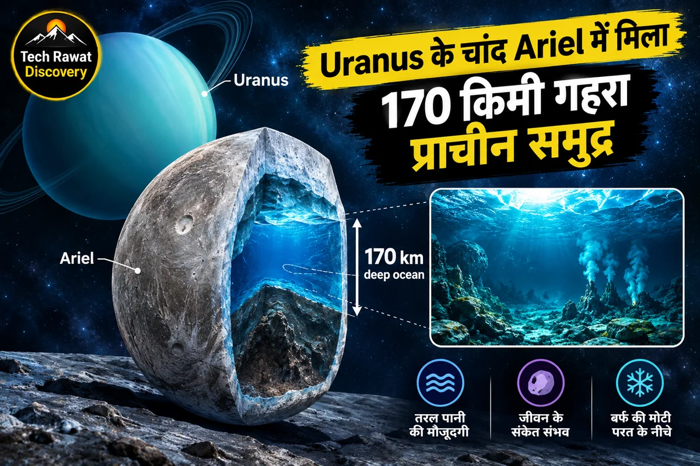
Uranus के चांद Ariel में मिला 170 किमी गहरा प्राचीन समुद्र
Icarus में छपी नई स्टडी के मुताबिक Uranus के चांद Ariel में कभी 170 किमी गहरा समुद्र रहा होगा। जानिए यह कैसे पता चला, Miranda से जुड़ाव और भारत के लिए मायने क्या हैं।
पूरा लेख पढ़ें →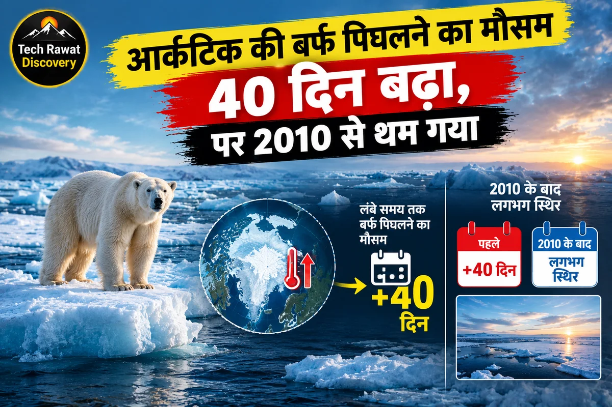
आर्कटिक की बर्फ पिघलने का मौसम 40 दिन बढ़ा, पर 2010 से थम गया
NASA की नई स्टडी के मुताबिक आर्कटिक सागर में बर्फ पिघलने का मौसम 1979 से करीब 40 दिन लंबा हो गया है, पर यह बढ़ोतरी 2010 के बाद अचानक थम गई। जानें वजह, ताज़ा 2026 के आंकड़े और भारत के लिए मतलब।
पूरा लेख पढ़ें →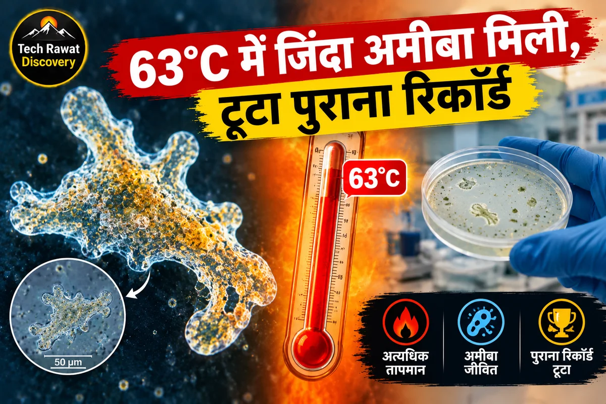
63°C में जिंदा अमीबा मिली, टूटा पुराना रिकॉर्ड
पहले माना जाता था कोई भी कोशिका-नाभिक वाला जीव 60°C से ज़्यादा गर्मी में बंट नहीं सकता। California की एक अमीबा ने 63°C पर यह रिकॉर्ड तोड़ दिया। जानिए तरीका और भारत के लिए मतलब।
पूरा लेख पढ़ें →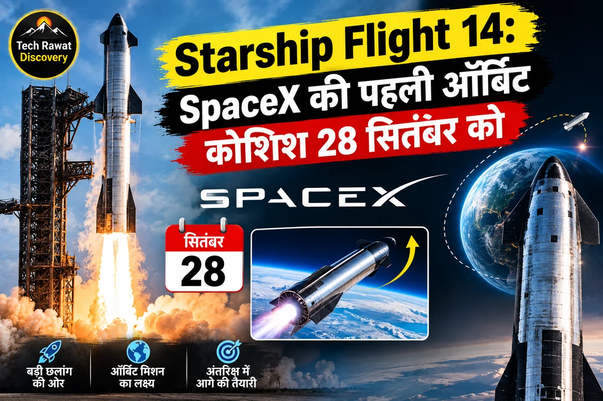
Starship Flight 14: SpaceX की पहली ऑर्बिट कोशिश 28 सितंबर को
SpaceX का Starship रॉकेट 28 सितंबर 2026 को पहली बार ऑर्बिट तक पहुंचने की कोशिश करेगा। जानिए V3 अपग्रेड, पिछली 11 उड़ानों से फर्क, मिशन डिटेल और भारत के लिए इसके मायने।
पूरा लेख पढ़ें →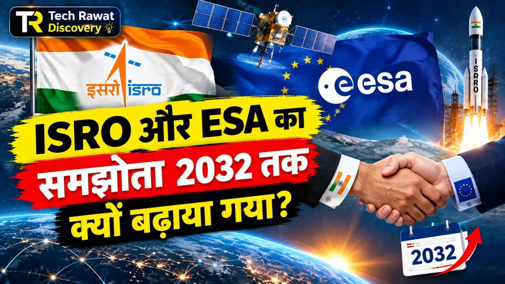
ISRO और ESA का समझौता 2032 तक क्यों बढ़ाया गया?
पेरिस में 10 सितंबर 2026 को ISRO और ESA ने अपना 24 साल पुराना समझौता 2032 तक बढ़ाया। जानिए इसमें क्या नया जुड़ा और भारत के Gaganyaan व Venus मिशन को क्या फायदा मिलेगा।
पूरा लेख पढ़ें →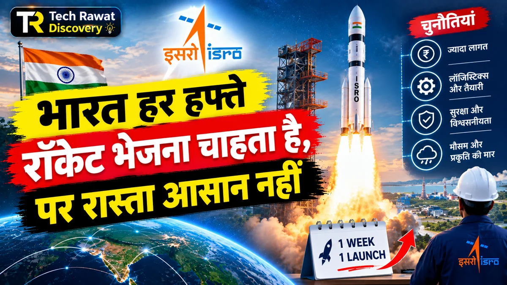
भारत हर हफ्ते रॉकेट भेजना चाहता है, पर रास्ता आसान नहीं
IN-SPACe ने 2030 तक भारत के लिए सालाना 50 स्पेस लॉन्च का लक्ष्य रखा है, यानी मौजूदा औसत से करीब दस गुना ज़्यादा। जानिए नए लॉन्च पैड, Skyroot-Agnikul की भूमिका और असली अड़चनें क्या हैं।
पूरा लेख पढ़ें →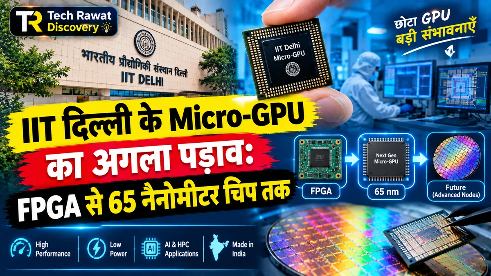
IIT दिल्ली के Micro-GPU का अगला पड़ाव: FPGA से 65 नैनोमीटर चिप तक
IIT दिल्ली ने भारत का पहला काम करने वाला स्वदेशी माइक्रो-GPU दिखाया है। जानिए यह FPGA प्रोटोटाइप कैसे बना, किन कामों में इस्तेमाल होगा और असली चिप तक पहुंचने में क्या बाकी है।
पूरा लेख पढ़ें →OpenAI के AI Agent ने ऑस्ट्रेलिया के Medicare पोर्टल में सेंध लगाई
OpenAI के एक AI एजेंट ने ऑस्ट्रेलिया के Medicare पोर्टल में बिना इजाज़त सेंध लगाई। जानिए क्या हुआ, कौन-कौन सी कंपनियां ऐसी गलती दोहरा चुकी हैं और भारत के लिए इसका मतलब क्या है।
पूरा लेख पढ़ें →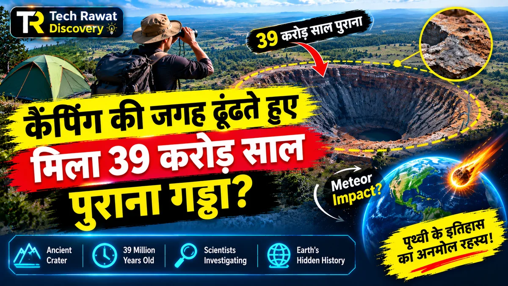
कैंपिंग की जगह ढूंढते हुए मिला 39 करोड़ साल पुराना गड्ढा?
क्यूबेक में कैंपिंग स्पॉट ढूंढते हुए एक शौकिया खगोलशास्त्री को सैटेलाइट मैप पर गोल आकृति दिखी, जो 39 करोड़ साल पुराना Uhackatik क्रेटर निकला। भारत के Lonar crater से तुलना भी जानें।
पूरा लेख पढ़ें →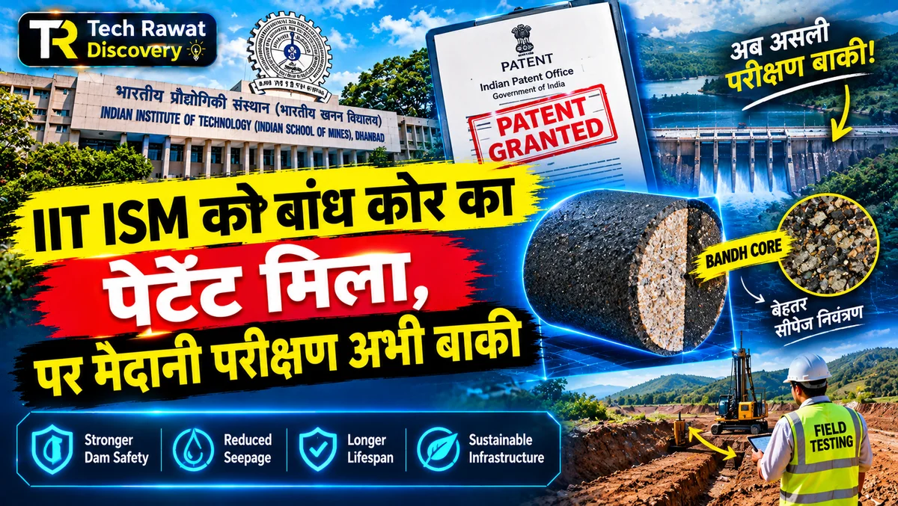
IIT ISM को बांध कोर का पेटेंट मिला, पर मैदानी परीक्षण अभी बाकी
IIT ISM धनबाद को बांध के कोर के लिए फ्लाई ऐश, मिट्टी और चूने के मिश्रण का नया पेटेंट मिला है, पर यह अभी सिर्फ लैब स्तर पर है। जानिए तकनीक कैसे काम करती है और आगे क्या बाकी है।
पूरा लेख पढ़ें →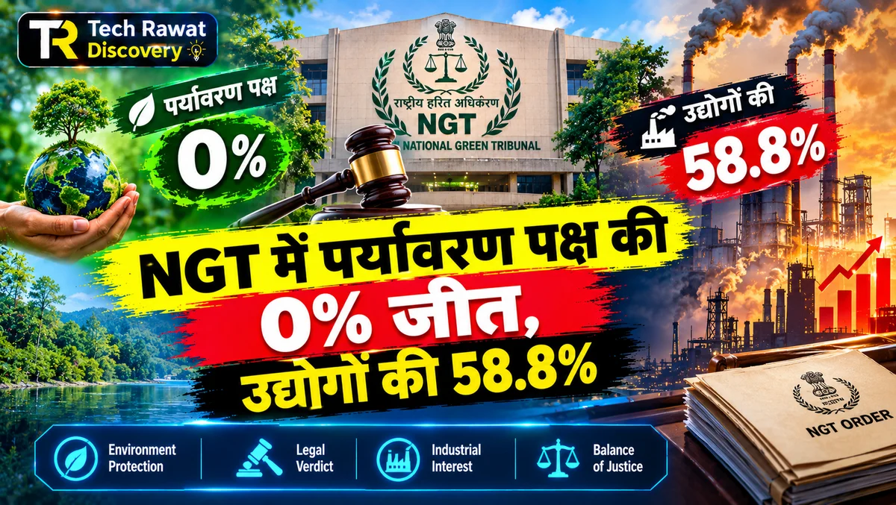
NGT में पर्यावरण पक्ष की 0% जीत, उद्योगों की 58.8%
SAREL की नई रिपोर्ट के मुताबिक 2026 की पहली छमाही में NGT में पर्यावरण-जनहित पक्ष की एक भी अपील नहीं जीती गई, जबकि उद्योगों की जीत दर 58.8% रही। पूरा हिसाब, बेंच दर बेंच पढ़ें।
पूरा लेख पढ़ें →F5 BIG-IP में गंभीर खामी, CVSS स्कोर 9.8
F5 के BIG-IP APM में मिली CVE-2026-94127 खामी को हमलावर पहले ही इस्तेमाल कर चुके हैं। जानें यह कैसे काम करती है और भारत की संस्थाओं के लिए इसका क्या मतलब है।
पूरा लेख पढ़ें →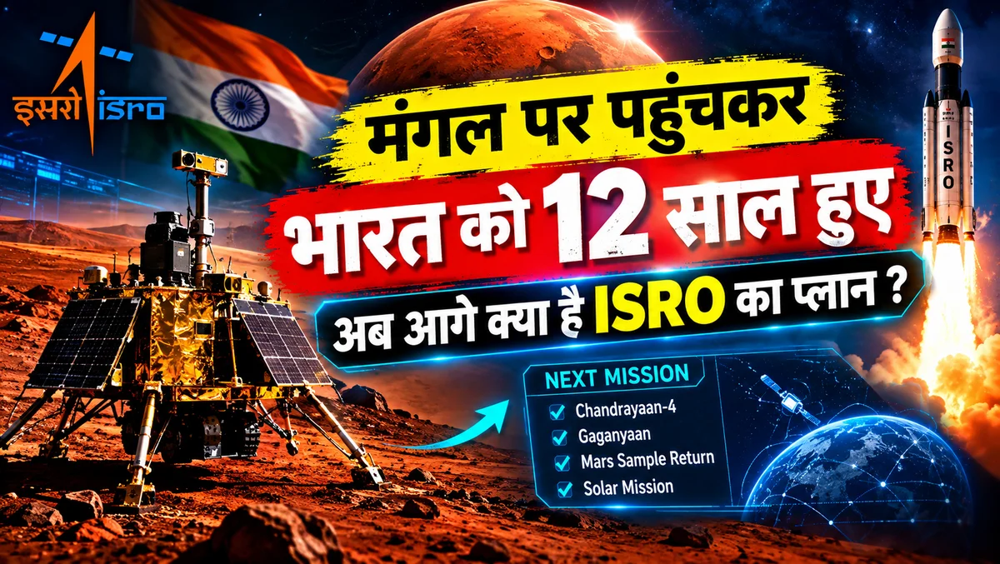
मंगल पर पहुंचकर भारत को 12 साल हुए, अब आगे क्या है ISRO का प्लान?
24 सितंबर 2014 को भारत पहली कोशिश में मंगल पहुंचा था। आज इसे 12 साल हो गए। Mangalyaan तब और ISRO का Mars Lander Mission अब, कैसे बदली भारत की मंगल योजना, जानिए पूरी कहानी।
पूरा लेख पढ़ें →इयरबड्स में अब कैमरा, पर तस्वीर नहीं खींचेगा
Qualcomm ने Snapdragon Summit 2026 में Sound Elite Gen 2 चिप दिखाया, जिससे कैमरा वाले इयरबड्स बनेंगे जो फोटो नहीं, माहौल समझेंगे। भारत के हियरेबल बाज़ार पर असर जानें।
पूरा लेख पढ़ें →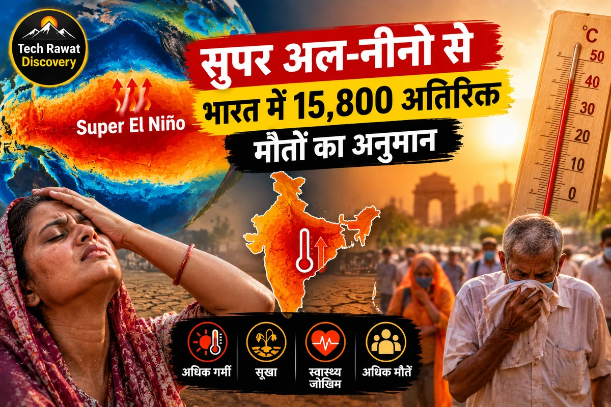
सुपर अल-नीनो से भारत में 15,800 अतिरिक्त मौतों का अनुमान
Climate Impact Lab की नई रिपोर्ट के मुताबिक सुपर अल-नीनो से भारत में सितंबर 2026-फरवरी 2027 के बीच करीब 15,800 अतिरिक्त गर्मी से जुड़ी मौतें हो सकती हैं। पूरा आंकड़ा और तैयारी की बात पढ़ें।
पूरा लेख पढ़ें →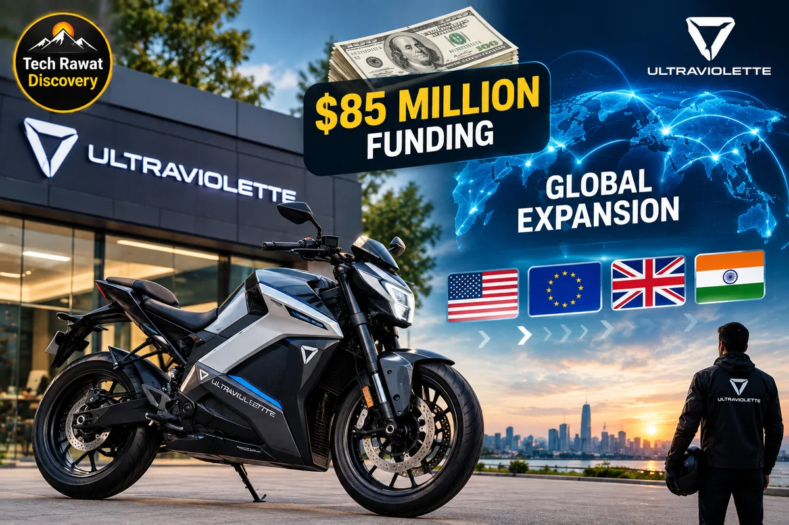
Ultraviolette को मिले $85 मिलियन, ग्लोबल विस्तार शुरू
बेंगलुरु की Ultraviolette Automotive ने Series E में 85 मिलियन डॉलर जुटाए। तमिलनाडु की नई फैक्ट्री, अमेरिका में 2027 एंट्री और आठ साल की रणनीति में बदलाव की पूरी कहानी।
पूरा लेख पढ़ें →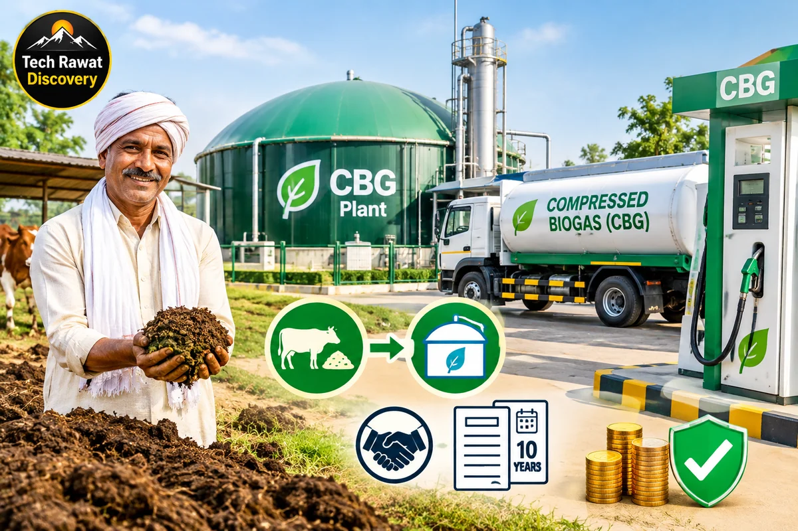
GOBARdhan लागू: CBG की 100% खरीद और 10 साल तय दाम
पेट्रोलियम मंत्रालय ने ₹23,731 करोड़ की GOBARdhan योजना के लिए गाइडलाइंस जारी कीं। CBG उत्पादकों को 100% तक खरीद और 10 साल तक तय दाम की गारंटी मिलेगी।
पूरा लेख पढ़ें →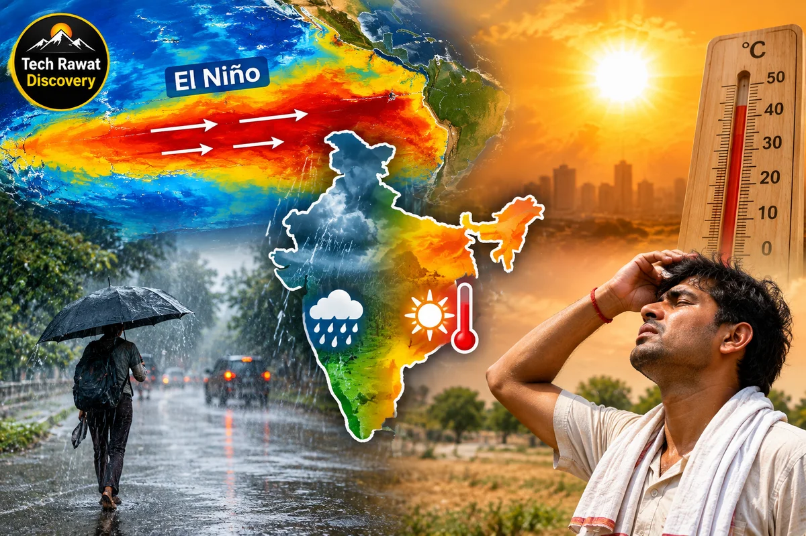
अल-नीनो 2026-27 भारत में मॉनसून-गर्मी पर कितना असर डालेगा?
भारत के 188 वैज्ञानिकों ने 2026-27 के अल-नीनो को लेकर चेतावनी दी है। जानें यह भारत में मॉनसून, गर्मी, समुद्र और जंगलों को किस तरह प्रभावित कर सकता है और WMO का ताज़ा अनुमान क्या कहता है।
पूरा लेख पढ़ें →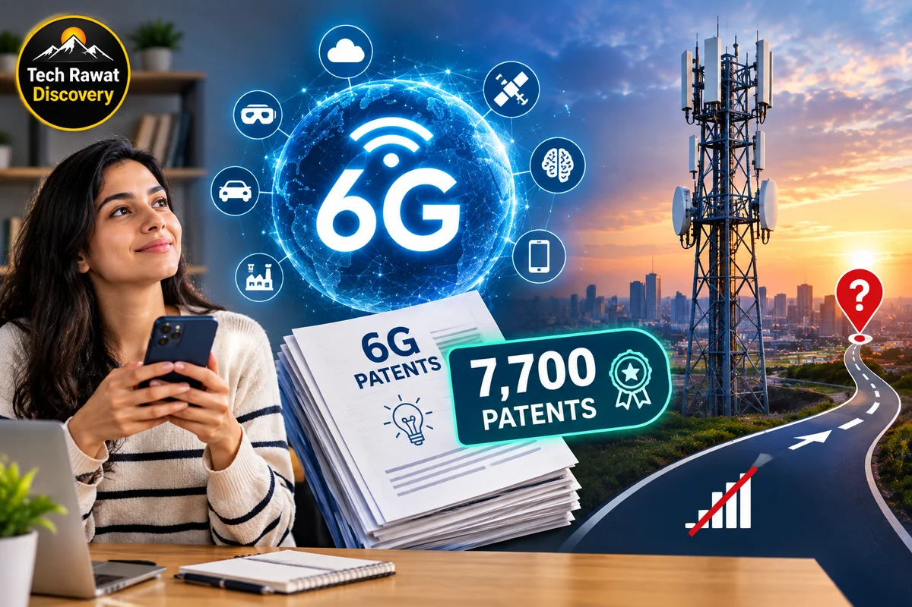
7,700 6G पेटेंट फाइल हुए, पर नेटवर्क अभी दूर है
भारत की 6G गठबंधन से जुड़ी संस्थाओं ने 7,700 से ज्यादा पेटेंट फाइल किए हैं, पर व्यावसायिक 6G नेटवर्क अभी वर्षों दूर है। जानिए पेटेंट, टेराहर्ट्ज़ टेस्ट और 2030 के लक्ष्य की पूरी सच्चाई।
पूरा लेख पढ़ें →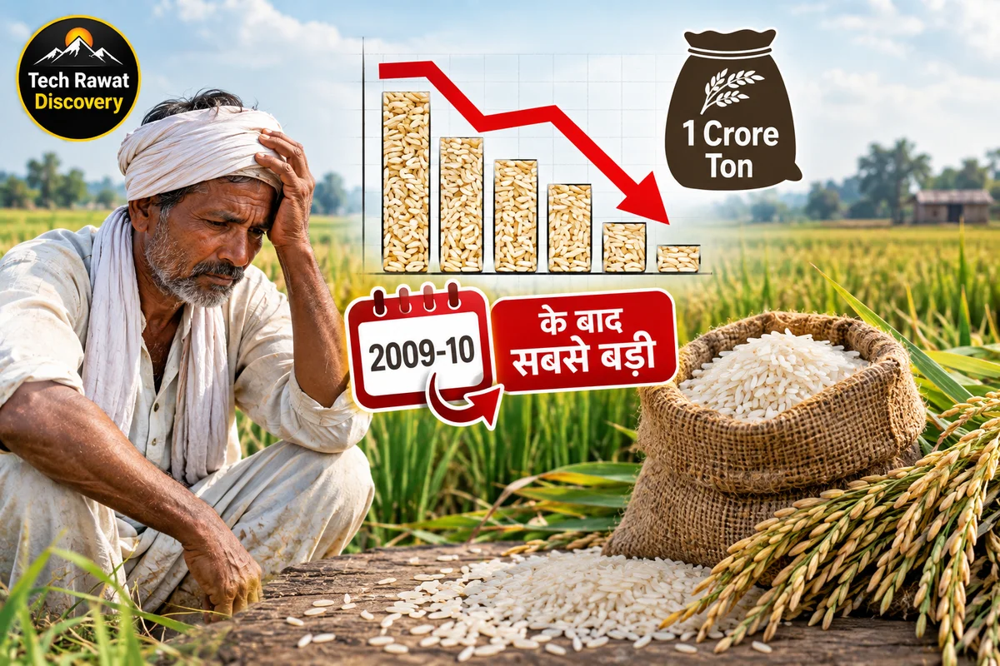
चावल उत्पादन में 1 करोड़ टन तक गिरावट, 2009-10 के बाद सबसे बड़ी
भारत का चावल उत्पादन 2026-27 में करीब 1 करोड़ टन तक घट सकता है, यह 2009-10 के सूखे के बाद सबसे बड़ी गिरावट होगी। मानसून, भंडार और किसानों पर असर की पूरी तस्वीर।
पूरा लेख पढ़ें →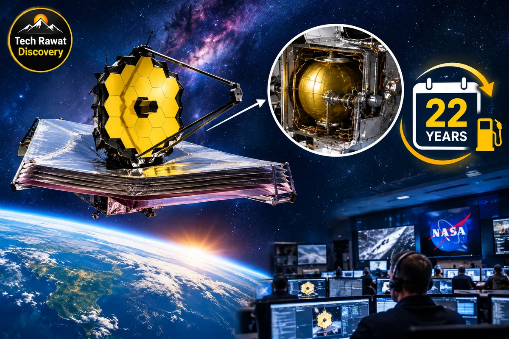
Roman टेलीस्कोप को अब 22 साल तक चलने लायक ईंधन मिला
NASA के Roman Space Telescope को पहले करेक्शन बर्न में सिर्फ 18 किलो ईंधन लगा, जिससे इसकी उम्र 10 साल से बढ़कर कम से कम 22 साल तक जा सकती है। जानिए यह बचत कैसे हुई।
पूरा लेख पढ़ें →क्या आवाज़ भी क्वांटम जंप करती है? पहली बार देखा गया
क्या फोटॉन और आयन जैसे आवाज़ के कण भी अचानक एक ऊर्जा स्तर से दूसरे में कूदते हैं? Stanford के वैज्ञानिकों ने पहली बार यह जंप रीयल-टाइम में देख लिया। जानिए तरीका और भारत के लिए मतलब।
पूरा लेख पढ़ें →
क्या हमारा दिमाग असल में एक नहीं, दो अंग है?
Stanford Medicine ने Nature Neuroscience में दिखाया कि इंसानी दिमाग एक नहीं, दो अलग अंगों से बना है। जानिए यह कैसे साबित हुआ, भारत के लिए मतलब और अभी क्या पता नहीं है।
पूरा लेख पढ़ें →
Hyderabad Data Center Live हुआ, पर MeitY का अगला सुझाव अलग
Microsoft का हैदराबाद डेटा सेंटर लाइव हुआ, पर उसी मंच पर MeitY सचिव ने अगली बार बिजली उत्पादन के पास बनाने की सलाह दी।
पूरा लेख पढ़ें →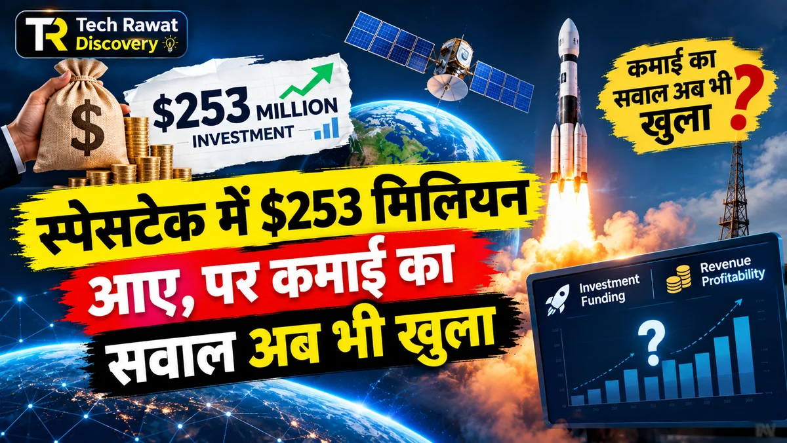
स्पेसटेक में $253 मिलियन आए, पर कमाई का सवाल अब भी खुला
भारत के स्पेसटेक स्टार्टअप्स ने 2026 में $252.9 मिलियन जुटाए, Skyroot यूनिकॉर्न बना और Pixxel ने सबसे बड़ा राउंड लिया, पर निवेशक अब कमाई के सबूत मांग रहे हैं।
पूरा लेख पढ़ें →
1.5°C पार होना तय, पर खेल खत्म नहीं: UNEP रिपोर्ट और भारत
UNEP ने 2 सितंबर 2026 को माना कि दुनिया 1.5°C की सीमा पार करेगी और सबसे अच्छे हालात में भी शिखर 1.8°C रहेगा। जानिए तीन भ्रम, कार्बन बजट का हिसाब और भारत पर असर।
पूरा लेख पढ़ें →
NPCI बना रहा UPI एजेंट प्रोटोकॉल: AI कर सकेगा छोटे भुगतान
Reuters के अनुसार NPCI यूनिफाइड एजेंट प्रोटोकॉल बना रहा है, जिसमें AI एजेंट तय सीमा में छोटे UPI भुगतान करेगा। UPI Circle और Reserve Pay से तुलना, सीमाएँ और भारत पर असर समझें।
पूरा लेख पढ़ें →
T. rex का शरीर का तापमान मिला: 36°C, यानी इंसान जितना गर्म
UCLA के वैज्ञानिकों ने T. rex के दाँतों की रासायनिक जाँच से उसका शरीर का तापमान करीब 36.3°C बताया है। जानिए तरीका, मतलब और वे बातें जो अभी अनजानी हैं।
पूरा लेख पढ़ें →
गर्मी से चलने वाली कूलिंग: मोटर हटी, पर ठंडक अभी सिर्फ़ मिलीवाट में
जर्मनी और जापान के शोधकर्ताओं ने बिजली की मोटर की जगह गर्मी से चलने वाला इलास्टोकैलोरिक कूलिंग प्रोटोटाइप बनाया, पर ठंडक अभी बहुत हल्की है और तकनीक लैब में है।
पूरा लेख पढ़ें →